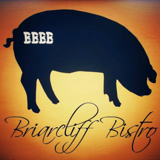

Briarcliff Bacon Bistro Closes
There’s an old adage, “When the Universe hands you a pig, you make BACON!” Actually, we just made that up… BUT, it’s not too far from the truth. This whole journey has been about making it up as we go along. In April 2013, after several life-changing events, the three founding partners of the BBBB - Jennifer Halpine, Robert Joseph Kinslow, and Jeff Demgen - found themselves asking, “What now?” The answer was simple…”Let’s buy our own bar!” And that’s EXACTLY how our story began. It would seem that sometimes the Universe points us in a direction. Thus, the collective quest to create an oasis of truly outstanding food, friends and environment in the greatest place possible- Spicewood, Texas -took root, and after an intense period of operational, financial and menu planning, the BBBB opened its doors in July of 2013. We present to you, our customers, our labor of love (with a side order of BACON!), and we sincerely hope that your experience at the BBBB is as exceptional as the time that we have had creating this vision come to life. Thank you for visiting the BBBB, and a VERY SPECIAL bow of appreciation to all of our loyal customers who have been such ardent supporters of our efforts.